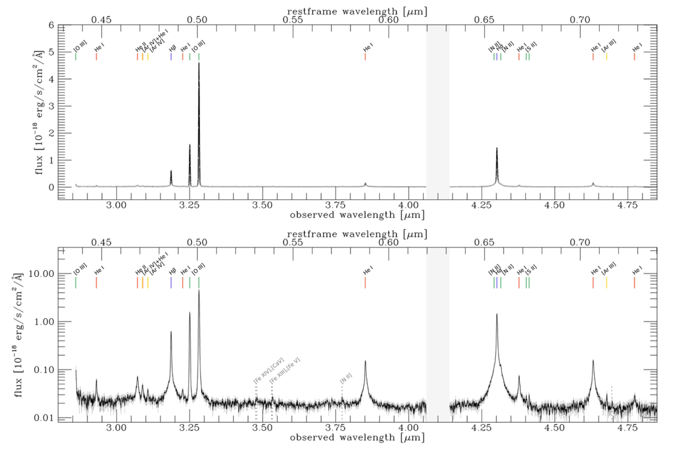

Brief description of each publication
10) GA-NIFS: The core of an extremely massive proto-cluster at the Epoch of Reionization probed with JWST/NIRSpec, Arribas et al. (2024)
These GA-NIFS observations reveal ten new galaxies at z~ 6.9 in the surroundings of SPT0311-58.
The implied large number density ($\phi$ ~ 10$^{4}\ $Mpc$^{-3}$) and the wide spread in velocities
confirm that SPT0311-58 is at the core of a protocluster immersed in a very massive dark-matter halo
of ~(5 $\pm$ 3) $\times$ 10$^{12}$ M$_{\odot}$sun, and therefore represents the most massive
protocluster ever found at the epoch of reionisation (EoR, see Figure below).
We also studied the dynamical stage of this protocluster core and find that it is likely not fully
virialised and that most of the galaxies are gravitationally bound to the dark matter halo.
The galaxies in the system exhibit a wide range of properties and evolutionary stages. Detailed
spatially resolved spectroscopy of the East galaxy reveals the early phases of stellar assembling
at very high-z, showing inhomogeneities in the ISM properties at subkiloparsec scales, deviations
from regular rotation, elevated turbulence, and a metallicity gradient that can be explained by
accretion of low metallicity gas from the intergalactic medium. We also find evidence of minor
mergers.
 Halo mass (M$_{200}$) of SPT0311-58 (red dot) together with a compilation of protoclusters observed
at z $>$ 2 and simulations (Lim+2021,2024), as a function of redshift. The figure shows the
extreme mass of SPT0311-58, being the most massive protocluster discovered so far at EoR. It
also shows the difficulty of TNG simulations to predict a rare system like SPT0311-58, as a
consequence of their limited simulated volume. The position of SPT0311-58 can be reproduced
by FLAMINGO simulations with larger box sizes.
Halo mass (M$_{200}$) of SPT0311-58 (red dot) together with a compilation of protoclusters observed
at z $>$ 2 and simulations (Lim+2021,2024), as a function of redshift. The figure shows the
extreme mass of SPT0311-58, being the most massive protocluster discovered so far at EoR. It
also shows the difficulty of TNG simulations to predict a rare system like SPT0311-58, as a
consequence of their limited simulated volume. The position of SPT0311-58 can be reproduced
by FLAMINGO simulations with larger box sizes.
8) A fast-rotator post-starburst galaxy quenched by supermassive black-hole feedback at z=3, Francesco D'Eugenio et al. (2023) ADS link
There is compelling evidence that the most massive galaxies in the Universe stopped forming stars due to the
time-integrated feedback from their central super-massive black holes (SMBHs). However, the exact quenching mechanism
is not yet understood, because local massive galaxies were quenched billions
of years ago. We present JWST/NIRSpec integral-field spectroscopy observations of GS-10578,
a massive, quiescent galaxy at redshift $z = 3.064 \pm 0.002$.
From the spectrum we infer that the galaxy has a stellar mass of $M_\star = 1.6 \pm
0.2 \times 10^{11} \mathrm{M}_\odot$ and a dynamical mass $M_\mathrm{dyn} = 2.0 \pm 0.5 \times 10^{11}
\mathrm{M}_\odot$ . Half of
its stellar mass formed at $z = 3.7–4.6$, and the system is now quiescent, with
an upper limit on the current star-formation rate $SFR < 19 \mathrm{M_\odot \, yr^{-1}}$. We detect
ionised- and neutral-gas outflows traced by $\mathrm{[O\,\scriptsize{iii}]}$ emission and
$\mathrm{Na\,\scriptsize{I}}$ absorption. Outflow velocities reach
$v_\mathrm{out} \approx 1,000 \mathrm{km\, s^{-1}}$, comparable to the galaxy
escape velocity. GS-10578 hosts an Active Galactic Nucleus (AGN), evidence
that these outflows are due to SMBH feedback. The outflow rates are 0.14–2.9
and 30–100 $\mathrm{M_\odot\,yr^{−1}}$ for the ionised and neutral phases, respectively.
The neutral outflow rate is higher than the SFR, hence this is direct evidence for ejective
SMBH feedback, with mass-loading capable of interrupting star formation by
rapidly removing its fuel. Stellar kinematics show ordered rotation, with spin
parameter $\lambda_{R_\mathrm{e}} = 0.62\pm0.07$, meaning GS-10578 is rotation supported. This study
shows direct evidence for ejective AGN feedback in a massive, recently quenched
galaxy, thus helping to clarify how SMBHs quench their hosts. The high value
of $\lambda_{R_\mathrm{e}}$ implies that quenching can occur without destroying the stellar disc.

7) GA-NIFS: co-evolution within a highly star-forming galaxy group at z=3.7 witnessed by JWST/NIRSpec IFS, Rodríguez Del Pino et al. (2023)
GS4891 is a massive, highly star-forming galaxy part of a system of at least three galaxies at z~3.7,
together with a system at the north GS4891_n and GS28356. NIRSpec/IFS observations have revealed internal
substructure in GS4891 in the form of star-forming clumps (C1 and C2) as well as a complex interplay of
interactions and internal feedback within the group. Analyses of the rest-frame optical emission lines
have shown a clear gradient of more than 0.2 dex in the gas metallicity from the south to the north-west
of the most-massive system (GS4891), suggesting ongoing accretion of low-metallicity gas from the inter-galactic
medium that would be contributing to the mass-assembly of the system. The even higher gas metallicity in the
lower-mass companion at the north (GS4891_n) also suggests that the accretion of low-metallicity gas is favored
in the most-massive system, a scenario that would lead to a different evolution in the metallicity of satellites
and centrals at high redshift. The gas kinematics of the most-massive galaxy are consistent with rotation in a
dark-matter dominated system. Moreover, this galaxy is host to a metal-enriched, nuclear ionized outflow that
reaches up to ~1.2 kpc and could be contributing to the observed metallicity gradient.

5) GA-NIFS: JWST/NIRSpec IFU observations of HFLS3 reveal a dense galaxy group at z∼6.3, Jones et al. (2024)
Massive, starbursting galaxies in the early Universe represent some of the most extreme objects in the study of galaxy evolution. One such source is HFLS3 (z∼6.34), which was originally identified as an extreme starburst galaxy with mild gravitational magnification (μ∼2.2). Here, we present
new observations of HFLS3 with the JWST/NIRSpec IFU in both low (PRISM/CLEAR; R∼100) and high spectral resolution (G395H/290LP;
R∼2700), with high spatial resolution (∼ 0.1") and sensitivity. Thanks to the combination of the NIRSpec data and a new lensing model with
accurate spectroscopic redshifts, we find that the 3"×3" field is crowded, with a lensed arc (C, z=6.3425±0.0002), two galaxies to the south (S1
and S2, z=6.3592±0.0001), two galaxies to the west (W1, z=6.3550±0.0001; W2, z=6.3628±0.0001), and two low-redshift interlopers (G1,
z=3.4806±0.0001; G2, z=2.00±0.01). We present spectral fits and morpho-kinematic maps for each bright emission line (e.g., [OIII]λ5007,
Hα, [NII]λ6584) from the R2700 data for all sources except G2 (whose spectral lines fall outside the observed wavelengths of the R2700 data).
From a line ratio analysis, the galaxies in component C are likely powered by star formation, while we cannot rule out or confirm the presence
of AGN in the other high-redshift sources. We perform gravitational lens modelling, finding evidence for a two-source composition of the lensed
central object and a comparable magnification factor (μ=2.1-2.4) to previous work. The projected distances and velocity offsets of each galaxy
suggest that they will merge within the next∼1 Gyr. Finally, we examine the dust extinction-corrected SFRHα of each z > 6 source, finding
that the total star formation (460±90M⊙ yr−1, magnification-corrected but not accounting for AGN contamination) is distributed across the six
z∼6.34-6.36 objects over a region of diameter∼11 kpc. Altogether, this suggests that HFLS3 is not a single starburst galaxy, but instead is a
merging system of star-forming galaxies in the Epoch of Reionization.
 Integrated emission of the HFLS3 field, using two illustrative wavelength
ranges: redshifted Hα for z ∼ 6.34 for the
R2700 cube (λobs = 4.79954 − 4.84467 μm, left panel) and
the approximate wavelength range of HST/WFC3 F160W for
the R100 cube (λobs = 1.4 − 1.6 μm; right panel). The adopted
source masks are shown with white boundaries. North is up and
east is to the left.
Integrated emission of the HFLS3 field, using two illustrative wavelength
ranges: redshifted Hα for z ∼ 6.34 for the
R2700 cube (λobs = 4.79954 − 4.84467 μm, left panel) and
the approximate wavelength range of HST/WFC3 F160W for
the R100 cube (λobs = 1.4 − 1.6 μm; right panel). The adopted
source masks are shown with white boundaries. North is up and
east is to the left.
2) GA-NIFS: A massive black hole in a low-metallicity AGN at z ∼ 5.55 revealed by JWST/NIRSpec IFS, Übler et al. (2023)
In this paper, we present rest-frame optical data of the compact z = 5.55 galaxy GS_3073 obtained using the integral field spectroscopy mode of the Near-InfraRed Spectrograph on board the James Webb Space Telescope. The galaxy's prominent broad components in several hydrogen and helium lines (though absent in the forbidden lines) and the detection of a large equivalent width of He IIλ4686, EW(He II) ∼20 Å, unambiguously identify it as an active galactic nucleus (AGN). We measured a gas phase metallicity of Zgas/Z⊙∼0.21−0.04+0.08 , which is lower than what has been inferred for both more luminous AGN at a similar redshift and lower redshift AGN. We empirically show that classical emission line ratio diagnostic diagrams cannot be used to distinguish between the primary ionisation source (AGN or star formation) for systems with such low metallicity, though different diagnostic diagrams involving He IIλ4686 prove very useful, independent of metallicity. We measured the central black hole mass to be log(MBH/M⊙)∼8.2 ± 0.4 based on the luminosity and width of the broad line region of the Hα emission. While this places GS_3073 at the lower end of known high-redshift black hole masses, it still appears to be overly massive when compared to its host galaxy's mass properties. We detected an outflow with a projected velocity ≳700 km s−1 and inferred an ionised gas mass outflow rate of about 100 M⊙ yr−1, suggesting that one billion years after the Big Bang, GS_3073 is able to enrich the intergalactic medium with metals.

Integrated spectrum extracted from the central three by three spaxels in the wavelength range 2.86μm < λ < 4.85μm with flux in linear scale (top) and log scale (bottom). Several emission lines are present and indicated by vertical lines at the top We detect seven He I lines, He IIλ4686, Hβ, [O III]λλ4959, 5007, Hα, [N II]λλ6548, 6583, and [S ii]λλ6716, 6731. We also report the detection of [Ar IV]λ4711, [Ar IV]λ4740 and [Ar III]λ7136 (note that [Ar IV]λ4711 is blended with He Iλ4713).
BLR components are present in Hβ, Hα, He II, and the He I lines. In addition, an outflow component is present, best visible in the broadened, asymmetric line base of the [O III] doublet. We indicate the positions of possible coronal lines [Fe XVI], [Ca V], [Fe XIII], [Fe V], of the auroral line [N II]λ5755, and of another line at λ ∼ 7167.5Å the position of which is consistent with Si I, as grey dotted vertical lines in the bottom panel.